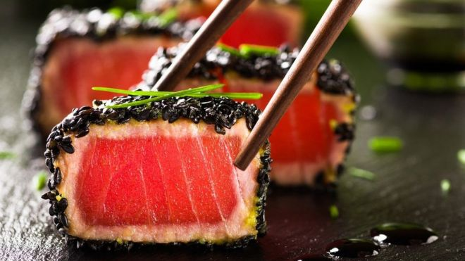
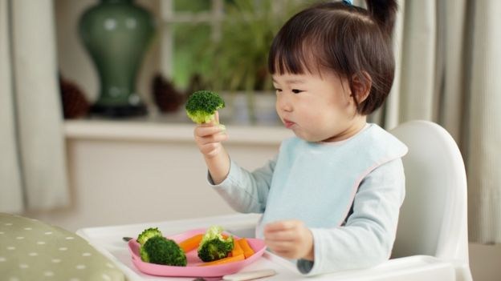

Dieta japonesa: ¿deberíamos comer como los japoneses para vivir más?
¿Qué tienen ellos que nosotros no? ¿Es lo que comen?
Algo así fue lo que nos dio la "dieta mediterránea", baja en grasas de origen animal, cuya popularidad fuera de su región de origen puede retrotraerse al nutricionista estadounidense Ancel Keys y su interés por los centenarios de Italia en los años 70.
¿Qué es realmente la dieta mediterránea?
En los 90, otro nutricionista, Walter Willett, se refirió a la longevidad de los japoneses en un artículo académico en el que también destacó el bajo número de muertes por enfermedades del corazón. Desde entonces, numerosos investigadores se han preguntado si esa longevidad se puede atribuir a la comida. Y, de ser así, ¿qué alimentos deberíamos consumir si queremos vivir más?
¿Qué es la dieta japonesa?
La dieta japonesa es un concepto bastante amplio que no siempre ha tenido el sushi como epicentro, como señala la epidemióloga Shu Zhang, del Centro Nacional de Geriatría y Gerontología de Japón.
Un reciente estudio que revisó 39 investigaciones sobre la conexión entre la dieta de los japoneses y su salud encontró algunos elementos en común: pescado, vegetales, soja y otros productos como arroz, salsa de soja y sopa miso.
De hecho, en general, este tipo de dietas está asociada a una reducción de las muertes por enfermedades del corazón, dice Zhang, aunque no en el caso del cáncer.
Es interesante que también parece conectada a una baja tasa de mortalidad en general.
Tsuyoshi Tsuduki, profesor de biociencia molecular de la Universidad Tohoku, estudió qué versión de la dieta japonesa puede contribuir a alargar la esperanza de vida.
Inicialmente, usó datos de encuestas para representar lo que sería la dieta de los japoneses en los 90. Y lo mismo para los estadounidenses.
Usó platos de la dieta japonesa y la estadounidense para alimentar durante tres semanas a unas ratas de laboratorio cuya salud fue monitoreada muy de cerca.
Un reciente estudio que revisó 39 investigaciones sobre la conexión entre la dieta de los japoneses y su salud encontró algunos elementos en común: pescado, vegetales, soja y otros productos como arroz, salsa de soja y sopa miso.
De hecho, en general, este tipo de dietas está asociada a una reducción de las muertes por enfermedades del corazón, dice Zhang, aunque no en el caso del cáncer.
Es interesante que también parece conectada a una baja tasa de mortalidad en general.